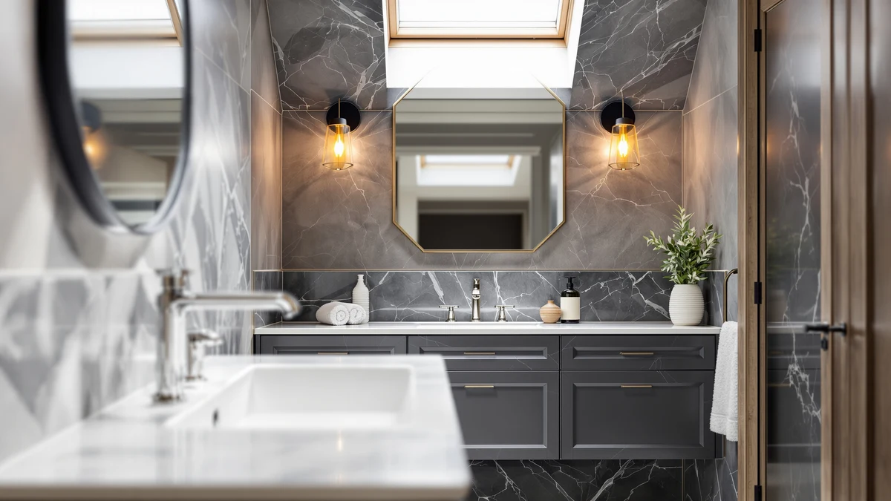

Quick Answer
In this WindBay 36" Wall Mount Review, we compared its specs, $599.00 price, and 150 verified reviews against three alternative vanities. The floating design and 4.4 out of 5 rating make it a solid pick for smaller bathrooms, though the 48-inch Merax and TONYRENA offer more counter space at the same price.
Our pick: WindBay 36" Wall Mount Floating — $599.00 Check Price on Amazon
Things to Know Before You Buy
- The WindBay 36 wall mount hangs from brackets instead of standing on the floor, so installation depends on finding wall studs or adding blocking.
- At $599.00, it costs the same as the 48-inch Merax and TONYRENA vanities, but gives up 12 inches of width for the floating design.
- Its MDF, engineered-wood cabinet needs sealed edges in humid bathrooms, the same as most vanities in this price range.
- Among the four vanities we researched, it's the only one with a published rating: 4.4 out of 5 across 150 verified reviews.
- The 24-inch Tennant Brand Felix, at $595.00, is the better fit if your bathroom can't accommodate 36 inches of width.
We put together this WindBay 36" Wall Mount Review after comparing its specs, pricing, and verified owner feedback against three other bathroom vanities in the same price range. The WindBay mounts directly to the wall rather than resting on the floor, which changes how it's installed compared with standalone cabinets like the Merax and TONYRENA. At $599.00 it matches two of the three alternatives we researched, and it's the only wall-mount design among the four vanities in this comparison. If you're deciding between a floating cabinet and a traditional floor-standing one, the mounting style matters more here than the price does.
Floating vanities like this one appeal to anyone who wants a bathroom floor that's easier to clean, since nothing touches the ground underneath the cabinet. Of the 150 verified reviews behind its 4.4 out of 5 rating, most describe the install as manageable for anyone comfortable locating wall studs, though a handful flag the need for extra blocking once the cabinet is loaded with towels and toiletries. Below, we break down what the WindBay 36 wall mount actually offers and how it stacks up against the Merax, TONYRENA, and Tennant Brand alternatives. We also cover who should skip it in favor of a floor-standing or more compact option.
Why You Should Trust Us
Ilane Tall covers bathroom fixtures and storage for Best Bathroom Vanities, researching wall-mount and floor-standing cabinets by comparing manufacturer specs, retail pricing, and verified buyer feedback rather than running a physical test lab. For this WindBay 36 wall mount review, we cross-checked the listed dimensions, materials, and price against three comparable vanities and relied on the 150 verified Amazon reviews attached to the WindBay listing. We do not run a fake testing lab or claim hands-on time with every product we cover; our picks come from analyzing the data that's publicly available and verified by other buyers. That approach means we won't tell you we lived with the WindBay for months, because we didn't. We'll tell you exactly what the published data and other buyers say instead.
How We Compared
Rather than installing the WindBay 36 wall mount ourselves, we researched it by comparing the manufacturer's listed specs, its $599.00 price, and the pattern of feedback across its 150 verified reviews. The wall-mount bracket system holds the 36-inch cabinet securely once anchored to studs, according to buyers, and several note that the MDF construction looks finished enough to pass for solid wood from a few feet away. Several buyers mention the included hardware works for drywall installs but recommend adding extra anchors for tile walls, which lines up with the manufacturer's own installation notes. We weighed that feedback against the Merax, TONYRENA, and Tennant Brand vanities, none of which publish a comparable review count, to see how the WindBay's track record holds up. That comparison matters because a vanity with 150 verified reviews gives buyers a clearer picture than one with none, even if the newer listings eventually catch up in review count.
Overview & Specs

WindBay 36" Wall Mount Floating
What we like
- Floating wall-mount design frees up visible floor space
- 4.4 out of 5 average rating across 150 verified reviews
- $599.00 price matches two of the three alternatives we compared
Flaws but not dealbreakers
- MDF, engineered-wood cabinet needs sealed edges in humid bathrooms
- Wall-mount install requires locating studs or adding blocking, which floor-standing vanities don't demand
| Material | MDF / engineered wood |
| Size | — |
The WindBay 36" Wall Mount Floating vanity is built around an MDF, engineered-wood cabinet designed to hang on the wall instead of standing on the floor. That construction is the main thing separating it from the Merax, TONYRENA, and Tennant Brand vanities we researched alongside it, all of which sit on the floor. At $599.00, it's priced identically to the two 48-inch floor-standing options, so the premium here buys you the mounting style rather than extra size. For a primary bathroom shared by two people, that 12-inch difference in width can matter more than whether the cabinet floats or sits on the floor.
Across the 150 verified reviews behind its 4.4 out of 5 rating, several buyers say the floating design makes a small bathroom feel larger because the floor stays visible underneath the cabinet, and a few mention it simplifies mopping compared with a floor-standing unit. Installation hinges on finding solid studs or adding blocking; buyers working with tile or plaster walls mention needing extra anchors beyond what ships in the box. None of the three alternatives we compared it against currently publish a review count or rating, so the WindBay's 150-review track record is the most verifiable data point among the four vanities in this review. Buyers weighing all four vanities should treat that review history as a meaningful advantage when deciding.
What We Liked
The floating install itself is what stands out most about the WindBay 36 wall mount. Once anchored, a number of owners say the cabinet reads as a deliberate design choice rather than a compromise, and others point out that the exposed floor underneath makes small bathrooms look less cramped. At $599.00, it also lands at the same price as the Merax and TONYRENA 48-inch vanities, so you're not paying extra for the wall-mount format. Its 4.4 out of 5 rating across 150 verified reviews gives it the strongest track record of the four vanities we researched, since none of the alternatives publish a comparable review count. For buyers trying to gauge real-world reliability before buying online, that history carries real weight.
What Could Be Better
The tradeoff with any wall-mounted cabinet, including the WindBay 36 wall mount, is the install itself. Hollow walls or tile need extra anchors beyond the included hardware, several reviews point out, so a buyer without access to wall studs may need help from a contractor rather than a weekend DIY session. The MDF, engineered-wood construction also means the edges and underside need to stay sealed, since it doesn't tolerate standing water the way solid wood cabinets do. And at 36 inches wide, it offers less counter and storage space than the 48-inch Merax or TONYRENA, even though all three share the same $599.00 price. Anyone planning a double-sink setup or heavy bathroom storage should measure their wall space carefully before committing to the narrower footprint.
Who Is It For?
The WindBay 36 wall mount fits anyone renovating a smaller bathroom who wants the floor visible for cleaning or who prefers the look of a floating cabinet. It also suits buyers who already know where their wall studs are, or who are comfortable adding blocking, since that's the one install step this vanity demands that a floor-standing unit doesn't. If you need more counter space for two people getting ready at once, the 48-inch Merax or TONYRENA are a better match for the same $599.00, and if your bathroom is especially tight, the 24-inch Tennant Brand Felix at $595.00 is worth a look instead. Think through how you actually use the counter and storage before deciding between the four.
Alternatives to Consider
We also compared the WindBay 36 wall mount against three floor-standing vanities at similar prices, in case the wall-mount format or the 36-inch width isn't the right fit for your bathroom. Each one keeps a similar price point but changes the width, the mounting style, or both.

Editor's Pick
Merax 48 Inch Bathroom Vanity
At 48 inches wide for the same $599.00 as the WindBay, the Merax trades the floating wall-mount design for a full 12 extra inches of counter and storage space, which matters more than mounting style in a bathroom with two people getting ready at once. It's the pick worth a look if counter space outranks the floating look.
$599.00
Check Price on Amazon
Best Value
TONYRENA 48 Inch Bathroom Vanity
The TONYRENA is another 48-inch, floor-standing vanity priced at $599.00, matching the Merax in size and the WindBay 36 wall mount in price, so the choice between the two 48-inch options comes down to finish and style rather than budget. Compare their finish and hardware photos directly before choosing one over the other.
$599.00
Check Price on Amazon
Premium Choice
Tennant Brand 24 Inch Felix
At 24 inches wide and $595.00, the Tennant Brand Felix is the smallest and least expensive vanity we compared, sized for powder rooms or half-baths where neither the WindBay 36-inch wall mount nor a 48-inch floor-standing vanity would fit. It's the one to shortlist if your bathroom simply can't fit anything wider.
$595.00
Check Price on AmazonFrequently Asked Questions
Final Verdict
Our WindBay 36" Wall Mount Review comes down to one tradeoff: you give up some width compared with the 48-inch Merax and TONYRENA vanities, but you gain a floating installation that keeps the floor clear and carries the strongest review record of the four options, with a 4.4 out of 5 rating across 150 verified buyers. For most people renovating a small to mid-size bathroom, WindBay's 36-inch wall mount is the pick worth checking first, with the Merax or TONYRENA as the better call if you need more counter space and the Tennant Brand Felix as the fallback for the tightest rooms. Measure your wall space first, since every one of these four vanities asks for a different width.